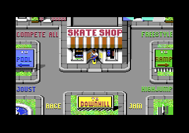
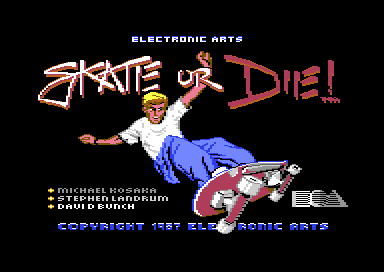

<meta charset="utf-8">
<meta name="viewport" content="width=device-width, initial-scale=1">
<title>Skate or Die!</title>
<link rel="preconnect" href="https://fonts.googleapis.com">
<link rel="stylesheet" href="https://fonts.googleapis.com/css2?family=Lato:wght@400;700;900&family=IBM+Plex+Mono:wght@400;500&display=swap">
<link rel="stylesheet" href="reference/sod-page.css">
<!-- tabs -->
<header class="hero">
  <p class="eyebrow">Commodore 64 · 1987 · Electronic Arts</p>
  <h1>Skate or Die!</h1>
  <p class="sub">Five skateboarding events around a town square, each loaded from disk on its own. This site takes one of them apart, High Jump, from the game's own code.</p>
</header>
<main class="wrap">
  <section id="game">
    <p class="fig">01 · The game</p>
    <h2 class="t">Rodney's shop, a town and five events</h2>
    <p>The game opens in Rodney's skate shop, where players sign in, practise or compete. Practice leads to a town square, and the skater rolls down its paths to the events: the Freestyle ramp, High Jump, the Downhill Race, the Downhill Jam and the Pool Joust.<sup class="fn"><a href="about.html#src-1" title="The manual">1</a></sup> Each event is a separate program. Choosing one shows SKATING TO HIGH JUMP, or the like, while the game's own disk code loads it over most of the computer's memory (<code>$F230</code>), and each disk side holds its own events: High Jump comes from side 1, the Downhill Race and the Jam from side 2.</p>
    <figure class="shot"><figcaption>The town square, where the skater chooses an event. Captured in an emulator from the copy studied here.</figcaption></figure>
  </section>
  <section id="makers">
    <p class="fig">02 · The makers</p>
    <h2 class="t">From Epyx to Electronic Arts</h2>
    <p>The title screen credits Michael Kosaka, Stephen Landrum and David Bunch. Landrum had been at Epyx, the maker of <i>Summer Games</i> and <i>Winter Games</i>, and joined Electronic Arts in February 1987: "At Electronic Arts, I was the lead programmer on Skate or Die! for the C-64."<sup class="fn"><a href="about.html#src-2" title="Stephen Landrum interview, 1993">2</a></sup> The Retrogaming Times names Kosaka and Landrum among the Epyx team who "moved on to EA and began work on a skateboard-themed compilation of events".<sup class="fn"><a href="about.html#src-5" title="The Retrogaming Times 38">5</a></sup></p>
    <p>Rob Hubbard, the British composer, came to the game from across the Atlantic: "The first thing I did for EA was Skate or Die C64."<sup class="fn"><a href="about.html#src-3" title="Rob Hubbard, C64.com">3</a></sup> Mark Lewis of EA had asked him "if I wanted to do a couple of months working in the US. That's when I did 'Skate or Die' C64 with the sampled guitars mixed in with the SID chipsounds. They then offered my a permanent job in California."<sup class="fn"><a href="about.html#src-4" title="Rob Hubbard and Chris Abbott, Arcade Attack">4</a></sup></p>
    <figure class="shot"><figcaption>The title screen. Captured in an emulator from the copy studied here.</figcaption></figure>
  </section>
  <section id="reception">
    <p class="fig">03 · The reception</p>
    <h2 class="t">A Zzap!64 Sizzler</h2>
    <p>Zzap!64, the British Commodore 64 magazine, gave the game 92 % and its Sizzler award in its Christmas 1987 issue, as The Retrogaming Times recalls it.<sup class="fn"><a href="about.html#src-5" title="The Retrogaming Times 38">5</a></sup></p>
  </section>
  <section id="covers">
    <p class="fig">04 · What this site covers</p>
    <h2 class="t">One event, every byte</h2>
    <p>Because each event replaces the last in memory, one snapshot of the running game holds one event. This site documents High Jump: all of the code and data it loads, 49,370 bytes, each one described in the <a href="source.html">Source code</a>, along with the resident disk code and the part of the game that runs between events, which High Jump hands its result to (<code>$FE13</code>). The shop, the town and the other four events are left for another study.</p>
  </section>
  <section id="explore">
    <p class="fig">05 · Inside High Jump</p>
    <h2 class="t">Explore how it works</h2>
    <ul>
      <li><a href="gameplay.html"><b>High Jump</b></a>: a half-pipe that is one line, speed from waggling the stick (<code>$16E3</code>), and why the height of the last pass is the one that counts (<code>$1798</code>).</li>
      <li><a href="graphics.html"><b>Graphics</b></a>: the picture and its moving crowd (<code>$192E</code>), and all 158 poses of the skater drawn from the game's data (<code>$7000</code>).</li>
      <li><a href="music.html"><b>Music and sound</b></a>: nine phrases chained at random (<code>$3549</code>), played by the game's own sound driver, and the event's sound effects.</li>
      <li><a href="discoveries.html"><b>Discoveries</b></a>: rules the manual leaves out, code nothing calls, and what the shop and the town leave behind in memory.</li>
      <li><a href="source.html"><b>Source code</b></a>: the High Jump load disassembled and annotated.</li>
    </ul>
  </section>
</main>
